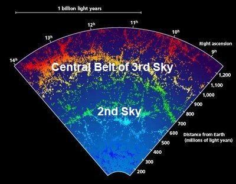
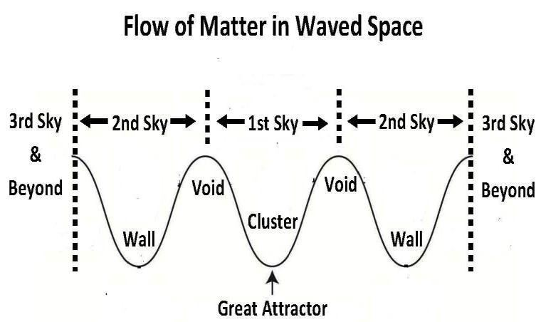

As depicted in Figure 2.20, the Great Wall, Perseus- Pisces Wall, and Sculptor Wall, along with other co- located structures, form the Second Sky. The Galaxies within the Second Sky are predominantly crowded together along its central plane (central sphere), resembling walls. This concentration of galaxies suggests that the fabric of space is denser within the central sphere of the Second Sky and gradually thinning out towards the edges. Therefore, the Second Sky is a super-giant spherical wave of space. From the edges of the Second Sky, the space is slopping down into the central sphere of the Sky where the galaxies are sliding down and forming walls. Only in a waved space, the galaxies should have tendency to move toward the central sphere of the wave and form walls. The formation of walls shows that the space of the universe is curved into waves (Skies). The Second Sky looks 400 million light years wide after adding half of the belt of void in each side (50+300+50). The central plane of the Second Sky should be about 500 million light years away from the Great Attractor (Radius of First Sky + 1/2 of the width of Second Sky = 500 million light years). Like Norma Finger of God, the clusters falling into the central sphere of the Second Sky show the Finger of God phenomena. 3f(3). The Third Sky
চিত্র 2.20-এ যেমন দেখানো হয়েছে, গ্রেট ওয়াল, পার্সিয়াস-মীন প্রাচীর, এবং ভাস্কর প্রাচীর সহ অন্যান্য সহ-অবস্থিত কাঠামো, দ্বিতীয় আকাশ গঠন করে। দ্বিতীয় আকাশের মধ্যে গ্যালাক্সিগুলি প্রধানত তার কেন্দ্রীয় সমতল (কেন্দ্রীয় গোলক) বরাবর একত্রে ভিড় করে, দেয়ালের মতো। ছায়াপথের এই ঘনত্ব থেকে বোঝা যায় যে মহাকাশের ফ্যাব্রিক দ্বিতীয় আকাশের কেন্দ্রীয় গোলকের মধ্যে ঘন এবং প্রান্তের দিকে ধীরে ধীরে পাতলা হয়ে আসছে। অতএব, দ্বিতীয় আকাশ হল মহাকাশের একটি সুপার-জায়ান্ট গোলাকার তরঙ্গ। দ্বিতীয় আকাশের প্রান্ত থেকে, স্থানটি আকাশের কেন্দ্রীয় গোলকের দিকে ঢালু হয়ে গেছে যেখানে ছায়াপথগুলি নিচের দিকে পিছলে গিয়ে দেয়াল তৈরি করছে। শুধুমাত্র একটি তরঙ্গযুক্ত স্থানে, ছায়াপথগুলির তরঙ্গের কেন্দ্রীয় গোলকের দিকে অগ্রসর হওয়ার এবং প্রাচীর গঠনের প্রবণতা থাকা উচিত। দেয়াল গঠন দেখায় যে মহাবিশ্বের স্থান তরঙ্গে (আকাশ) বাঁকা। প্রতিটি পাশে অর্ধেক বেল্ট (50+300+50) যোগ করার পর দ্বিতীয় আকাশ 400 মিলিয়ন আলোকবর্ষ চওড়া দেখায়। দ্বিতীয় আকাশের কেন্দ্রীয় সমতল গ্রেট অ্যাট্রাক্টর থেকে প্রায় 500 মিলিয়ন আলোকবর্ষ দূরে থাকা উচিত (প্রথম আকাশের ব্যাসার্ধ + দ্বিতীয় আকাশের প্রস্থের 1/2 = 500 মিলিয়ন আলোকবর্ষ)। ঈশ্বরের নরমা আঙুলের মতো, দ্বিতীয় আকাশের কেন্দ্রীয় গোলকের মধ্যে পড়া ক্লাস্টারগুলি ঈশ্বরের আঙুলের ঘটনা দেখায়। 3f(3)। তৃতীয় আকাশ
In the following figure, the Third Sky looks 600 million light years wide, and its central belt (central sphere) is about 1,000 million light years away from the Great Attractor (300+400+300).
নিচের চিত্রে, তৃতীয় আকাশ দেখতে 600 মিলিয়ন আলোকবর্ষ চওড়া, এবং এর কেন্দ্রীয় বেল্ট (কেন্দ্রীয় গোলক) গ্রেট অ্যাট্রাক্টর (300+400+300) থেকে প্রায় 1,000 মিলিয়ন আলোকবর্ষ দূরে।
FIGURE 2.21: Likely 2nd and 3rd Sky

চিত্র 2_21 / Figure 2_21
চিত্র 2.21: সম্ভবত ২য় এবং ৩য় আকাশ
চিত্র 2_21 / Figure 2_21
So, an outer Sky is wider than the inner Sky. On this scale, the radius of the Universe may be estimated to be 5 to 7 billion light years at most. The Universe appears much larger due to the warped space (Skies) and the continuous closing of matter (galaxies) into the central spheres of the waves. This effect is further enhanced by the Roll-up-Closing-Order of the Universe, which is discussed in Section 7 of Chapter 30.
সুতরাং, একটি বাইরের আকাশ ভিতরের আকাশের চেয়ে প্রশস্ত। এই স্কেলে, মহাবিশ্বের ব্যাসার্ধ সর্বাধিক 5 থেকে 7 বিলিয়ন আলোকবর্ষ অনুমান করা যেতে পারে। বিকৃত স্থান (আকাশ) এবং তরঙ্গের কেন্দ্রীয় গোলকের মধ্যে পদার্থের (গ্যালাক্সি) ক্রমাগত বন্ধ হওয়ার কারণে মহাবিশ্ব অনেক বড় দেখায়। মহাবিশ্বের রোল-আপ-ক্লোজিং-অর্ডার দ্বারা এই প্রভাবটিকে আরও উন্নত করা হয়েছে, যা অধ্যায় 30-এর অধ্যায় 7-এ আলোচনা করা হয়েছে।
3f(4). The Universe with Seven Skies
3f(4)। সাত আকাশ সহ মহাবিশ্ব
Seven super-giant waves of space make the Seven Skies of the Universe. The waves of space are spherical, one inside another—like the peels of onion. The Skies are not disconnected; the space, though waved, is continuous.
মহাকাশের সাতটি সুপার-জায়ান্ট তরঙ্গ মহাবিশ্বের সাতটি আকাশ তৈরি করে। মহাকাশের ঢেউগুলি গোলাকার, একটির ভিতরে আরেকটি - পেঁয়াজের খোসার মতো। আকাশ সংযোগ বিচ্ছিন্ন হয় না; স্থান, যদিও তরঙ্গিত, অবিচ্ছিন্ন.
FIGURE 2.22: Skies in two-dimensional Waves

চিত্র 2_22 / Figure 2_22
চিত্র 2.22: দ্বি-মাত্রিক তরঙ্গে আকাশ
চিত্র 2_22 / Figure 2_22
In above figure, the Skies are shown with two- dimensional waves. Outer Skies (Third to Seventh) should be the same as the Second Sky.
উপরের চিত্রে, আকাশকে দ্বিমাত্রিক তরঙ্গ দিয়ে দেখানো হয়েছে। বাইরের আকাশ (তৃতীয় থেকে সপ্তম) দ্বিতীয় আকাশের মতোই হওয়া উচিত।
3f(5). Doors and Paths of the Skies
3f(5)। আকাশের দরজা এবং পথ
It seems in figure 2.20 that the Filaments are holding the galaxies from falling rapidly into the Great Attractor and into the central sphere of Second Sky. It seems as well that the Filaments are making paths to cross the belts of voids. As the Skies are waves of space, it should be difficult for anything to move from one sky to another. The filaments may be used by the jinns to move from one Sky to another. The jinns are created from anti-matter. In addition, there may be channels through the space. One diving into a portal of such channel would be shifted to a huge distance in a short period of time.
চিত্র 2.20-এ মনে হচ্ছে যে ফিলামেন্টগুলি গ্যালাক্সিগুলিকে গ্রেট অ্যাট্রাক্টরে এবং দ্বিতীয় আকাশের কেন্দ্রীয় গোলকের মধ্যে দ্রুত পতিত হতে ধরে রেখেছে। এটিও মনে হয় যে ফিলামেন্টগুলি শূন্যতার বেল্টগুলি অতিক্রম করার জন্য পথ তৈরি করছে। যেহেতু আকাশ মহাকাশের তরঙ্গ, তাই এক আকাশ থেকে অন্য আকাশে যাওয়া যেকোনো কিছুর পক্ষেই কঠিন হওয়া উচিত। ফিলামেন্টগুলি জিনরা এক আকাশ থেকে অন্য আকাশে যাওয়ার জন্য ব্যবহার করতে পারে। জিনদের সৃষ্টি হয়েছে অ্যান্টি ম্যাটার থেকে। উপরন্তু, স্থান মাধ্যমে চ্যানেল হতে পারে. এই জাতীয় চ্যানেলের একটি পোর্টালে একটি ডাইভিং অল্প সময়ের মধ্যে একটি বিশাল দূরত্বে স্থানান্তরিত হবে।
3f(6). Conclusion of Observational Evidence
3f(6)। অবজারভেশনাল এভিডেন্সের উপসংহার
Allah has curved space into skies. The curvatures of space determine the directions in which galaxies to move and where they are to be collected. It has been observed that the galaxies of the First Sky are closing toward the center of the First Sky (Great Attractor), and the galaxies of the outer skies are flowing toward the central spheres of their respective Skies. Within galaxies, objects move through their orbits following the local curvatures of space.
আল্লাহ মহাকাশকে আকাশে বাঁকা করেছেন। মহাকাশের বক্রতা নির্ধারণ করে যে গ্যালাক্সিগুলো কোন দিকে যাবে এবং কোথায় তাদের সংগ্রহ করা হবে। এটি লক্ষ্য করা গেছে যে প্রথম আকাশের ছায়াপথগুলি প্রথম আকাশের কেন্দ্রের দিকে (গ্রেট অ্যাট্রাক্টর) বন্ধ হয়ে আসছে এবং বাইরের আকাশের ছায়াপথগুলি তাদের নিজ নিজ আকাশের কেন্দ্রীয় গোলকের দিকে প্রবাহিত হচ্ছে। ছায়াপথের মধ্যে, স্থানের স্থানীয় বক্রতা অনুসরণ করে বস্তুগুলি তাদের কক্ষপথে চলে।
3g. Other Indications of the Skies
3g. আকাশের অন্যান্য ইঙ্গিত
In a uniform universe, gas would spread out evenly. However, as the universe structured into skies and the skies expanded, the matter conglomerated into vast formations, forming galaxies. Only a universe with curved space (skies) could expand rapidly while maintaining balance. ―There is another extra ordinary feature pointed out by Stephen Hawking of Cambridge in 1973. If in the primordial fireball the expansion of the universe had differed by only one part in a million millionths from what it actually was, there would have been no possibility of the universe existing as we know it now. If the universe had expanded one million millionth parts faster, then all the material in the universe would have dispersed by now. There would have been no possibility of the gas being drawn together by gravity into stars. And if it had been a million millionth parts slower, then gravitational forces would have caused the universe to collapse within the first thousand million years or so its existence. Again, there would have been no long-lived stars and no life‖. –―Dawn of a New Era‖ by Sir Bernard Lovell in the Encyclopedia of Space Travel and Astronomy edited by John Man Hawking calculates that if the speed of expansion deviated by one million millionth parts, the stars could not form, or the universe would collapse by now. Our appearance was never in such grim probability, because the universe was waved into skies. Here tiny deviation in the rate of expansion would not matter much. The seven-sky-universe expands due to the dark energy as well, not due to the drive of the Big Bounce only.
একটি অভিন্ন মহাবিশ্বে, গ্যাস সমানভাবে ছড়িয়ে পড়বে। যাইহোক, মহাবিশ্ব যেমন আকাশে গঠিত হয়েছে এবং আকাশ প্রসারিত হয়েছে, বস্তুটি বিশাল আকারে একত্রিত হয়ে গ্যালাক্সি তৈরি করেছে। ভারসাম্য বজায় রেখে শুধুমাত্র বাঁকা স্থান (আকাশ) সহ একটি মহাবিশ্ব দ্রুত প্রসারিত হতে পারে। - 1973 সালে কেমব্রিজের স্টিফেন হকিং দ্বারা নির্দেশিত আরেকটি অসাধারণ বৈশিষ্ট্য রয়েছে। আদিম অগ্নিগোলে যদি মহাবিশ্বের সম্প্রসারণটি বাস্তবে যা ছিল তার থেকে এক মিলিয়ন মিলিয়ন ভাগে মাত্র একটি অংশের পার্থক্য হতো, তাহলে মহাবিশ্ব বিদ্যমান থাকার কোনো সম্ভাবনাই থাকত না যেমনটি আমরা এখন জানি। মহাবিশ্ব যদি এক মিলিয়ন মিলিয়নতম অংশ দ্রুত প্রসারিত হত, তাহলে মহাবিশ্বের সমস্ত উপাদান এতক্ষণে বিচ্ছুরিত হয়ে যেত। মাধ্যাকর্ষণ শক্তির দ্বারা তারার মধ্যে গ্যাস একত্রিত হওয়ার কোনো সম্ভাবনাই থাকত না। এবং যদি এটি এক মিলিয়ন মিলিয়নতম অংশ ধীর হয়ে যেত, তবে মহাকর্ষীয় শক্তি প্রথম হাজার মিলিয়ন বছরের মধ্যে বা এর অস্তিত্বের মধ্যে মহাবিশ্বের পতন ঘটাত। আবার, কোন দীর্ঘজীবী তারা এবং কোন জীবন থাকত না”। জন ম্যান হকিং সম্পাদিত মহাকাশ ভ্রমণ ও জ্যোতির্বিদ্যার এনসাইক্লোপিডিয়ায় স্যার বার্নার্ড লাভেল-এর ডন অফ এ নিউ ইরা - গণনা করে যে যদি সম্প্রসারণের গতি এক মিলিয়ন মিলিয়ন ভাগের দ্বারা বিচ্যুত হয়, তাহলে নক্ষত্রগুলি তৈরি হতে পারে না বা মহাবিশ্ব এখন ভেঙে পড়বে। আমাদের চেহারা এমন ভয়াবহ সম্ভাবনার মধ্যে ছিল না, কারণ মহাবিশ্ব আকাশে তরঙ্গায়িত হয়েছিল। এখানে প্রসারণের হারে ক্ষুদ্র বিচ্যুতি খুব একটা গুরুত্বপূর্ণ হবে না। সাত-আকাশ-মহাবিশ্ব অন্ধকার শক্তির কারণেও প্রসারিত হয়, শুধুমাত্র বিগ বাউন্সের ড্রাইভের কারণে নয়।
3h. Conclusion
3ঘ. উপসংহার
To conclude, one should understand from the context what the Quran means by sky / skies:
উপসংহারে, একজনকে প্রেক্ষাপট থেকে বুঝতে হবে আকাশ/আকাশ বলতে কুরআনের অর্থ কী:
3(h)1. In the Quran "sky", in singular form, means one of the followings: "Sky" may refer to the single-sky-universe of the preceding cycle: ―Moreover, infused His force (thumma istawa) into the Sky (single- sky-universe of the preceding / first cycle) while it had been smoke…‖ [Al Quran 41:11] The Resurrection of the Dead will take place in the collapsed universe revived to the state of Heavy Mass (Thaqal). When discussing about this time, the Quran has used the singular term of 'sky' to refer to the Super Space (space beyond the universe): ―And among His signs is this that the Sky (Super Space) and Land (Thaqal) stand-still on His command. Then when He calls you by a single call from the Land (Thaqal)—behold ye come forth.‖ [Al Quran 30:25] We see the stars of the Orion Spur by our naked eye. The Quran has used singular sky to mean the spur as local sky: ―…And We adorned the sky of the earth (samaa i-dunya) with lights, and with protection. Such is the decree of the Exalted in Might, Full of Knowledge. [Al Quran 41:12]
3(h)1. কুরআনে "আকাশ", একক আকারে, নিম্নলিখিতগুলির মধ্যে একটিকে বোঝানো হয়েছে: "আকাশ" পূর্ববর্তী চক্রের একক-আকাশ-মহাবিশ্বকে নির্দেশ করতে পারে: ―এছাড়াও, তাঁর বল (থুম্মা ইস্তাওয়া) আকাশে (পূর্ববর্তী/প্রথম চক্রের একক-আকাশ-মহাবিশ্ব) প্রবেশ করানো হয়েছিল যখন এটি ছিল [Quran:1] মৃতদের পুনরুত্থান ভারি ভরের (থাকাল) অবস্থায় পুনরুজ্জীবিত ভেঙে পড়া মহাবিশ্বে ঘটবে। এই সময় সম্পর্কে আলোচনা করার সময়, কুরআন সুপার স্পেস (মহাবিশ্বের বাইরে মহাকাশ) বোঝাতে 'আকাশ' শব্দটি ব্যবহার করেছে: "এবং তাঁর নিদর্শনগুলির মধ্যে এই যে আকাশ (সুপার স্পেস) এবং ভূমি (থাকাল) তাঁর আদেশে স্থির রয়েছে। অতঃপর যখন তিনি তোমাদেরকে ভূমি থেকে এক ডাকে ডাকেন (থাকাল) - দেখ তোমরা বেরিয়ে আসবে।'' [আল কুরআন 30:25] আমরা আমাদের খালি চোখে ওরিয়ন স্পুরের তারা দেখতে পাই। কোরান একবচন আকাশকে স্থানীয় আকাশ হিসাবে স্ফুর বোঝাতে ব্যবহার করেছে: “…এবং আমরা পৃথিবীর আকাশকে (সামা ই-দুনিয়া) আলো এবং সুরক্ষা দিয়ে সজ্জিত করেছি। মহাপরাক্রমশালী, জ্ঞানে পরিপূর্ণ আল্লাহ্র এই নির্দেশ। [আল কুরআন 41:12]
3(h)2. In the Quran, "skies", in plural form, may mean one of the followings: Skies often mean the universe as a whole / Seven Skies: ―He Who created the Seven Skies one above another; not you see in the creation of Most Gracious any disparity…" [Al Quran 67:03] Skies sometimes mean protective layers of atmosphere and magnetosphere: ―Who has made the earth your couch, and the skies your canopy; and sent down rain from the skies; and brought forth therewith Fruits for your sustenance; then set not up rivals unto God when ye know (the truth).‖ [Al Quran 2:22]
3(h)2। কুরআনে, "আকাশ", বহুবচন আকারে, নিম্নলিখিতগুলির মধ্যে একটির অর্থ হতে পারে: আকাশ প্রায়শই সমগ্র বিশ্বকে বোঝায় / সাতটি আকাশ: ―যিনি সাতটি আকাশ একে অপরের উপরে সৃষ্টি করেছেন; আপনি পরম করুণাময়ের সৃষ্টিতে কোন বৈষম্য দেখতে পাচ্ছেন না..." [আল কুরআন 67:03] আকাশ বলতে কখনো কখনো বায়ুমণ্ডল এবং চুম্বকমণ্ডলের প্রতিরক্ষামূলক স্তরকে বোঝায়: "যিনি পৃথিবীকে আপনার পালঙ্ক এবং আকাশকে আপনার ছাউনি বানিয়েছেন; এবং আকাশ থেকে বৃষ্টি বর্ষণ করেছেন; এবং তার দ্বারা ফল উৎপন্ন করেছেন; তারপরে আল্লাহ আপনার জন্য অযোগ্যতা নির্ধারণ করেছেন; (সত্য)।'' [আল কুরআন ২:২২]
3j. Summary
3জ. সারাংশ
The Skies of the Universe are waves of space, one inside another—like the peels of onion.
মহাবিশ্বের আকাশগুলি হল মহাকাশের তরঙ্গ, একে অপরের ভিতরে - পেঁয়াজের খোসার মতো।
Behold, thy Lord said to the angels, "Indeed, I am going to place in a land (ardi) a vicegerent." They said, "Will You place therein one who will make mischief therein and shed blood, while we do celebrate Thy praises and glorify Thy holy (name)?" He said, "I know what you know not." And He taught Adam the names of all of them; then He placed them before the angels and said, "Tell me the names of these if you are right." They said, "Glory to You, of knowledge we have none, save what You have taught us. In truth, it is You Who is perfect in knowledge and wisdom." He said, "O Adam! Tell them their names." When he had told them their names, Allah said, "Did I not tell you that I know the secrets of the Sky and Land, and I know what you reveal and what you conceal?" Remarks:
দেখ, তোমার রব ফেরেশতাদেরকে বললেন, নিশ্চয়ই আমি এক দেশে (আরদি) একজন প্রতিনিধি স্থাপন করতে যাচ্ছি। তারা বলল, "আপনি কি সেখানে এমন একজনকে স্থাপন করবেন যে সেখানে অশান্তি করবে এবং রক্তপাত করবে, যখন আমরা আপনার প্রশংসা করি এবং আপনার পবিত্র (নাম) মহিমান্বিত করি?" তিনি বললেন, আমি জানি যা তুমি জানো না। এবং তিনি আদমকে তাদের সকলের নাম শিখিয়েছিলেন; অতঃপর তিনি সেগুলোকে ফেরেশতাদের সামনে দাঁড় করিয়ে বললেন, আপনি যদি সঠিক হন তবে এগুলোর নাম বলুন। তারা বলল, "আপনি পবিত্র, আমাদের কাছে জ্ঞানের কিছুই নেই, আপনি আমাদের যা শিখিয়েছেন তা ছাড়া। প্রকৃতপক্ষে, আপনিই জ্ঞান ও প্রজ্ঞায় পরিপূর্ণ।" তিনি বললেন, হে আদম! তাদের নাম বল। যখন তিনি তাদের নাম বললেন, তখন আল্লাহ বললেন, আমি কি তোমাদের বলিনি যে, আমি আকাশ ও জমিনের গোপন বিষয় জানি এবং আমি জানি তোমরা যা প্রকাশ কর এবং যা গোপন কর? মন্তব্য:
The above verses highlight three points: Humans are created as the vicegerents of Allah. Humans are learning creatures. What Humans are to do on the Earth
উপরের আয়াতগুলো তিনটি বিষয় তুলে ধরে: মানুষকে সৃষ্টি করা হয়েছে আল্লাহর ভাইসার্স হিসেবে। মানুষ শিখছে জীব। পৃথিবীতে মানুষ কি করবে
1. Humans are created as the vicegerents of Allah.
1. মানুষকে সৃষ্টি করা হয়েছে আল্লাহর ভাইসার্স হিসেবে।
The verses highlight the purpose of creating human beings. They are vicegerents of God on the lands. Humans are servants of God as well. But, they are servants as vicegerents. Humans are His vicegerents on the lands. The lands are scattered throughout the universes. If the planet Earth is a land, the planet Mars too is a land. There are lands (planets) in every galaxy of the Samawaat (this universe). And, there are lands (planets) in the Jannaat (another universe). If I were a vicegerent of Allah on a land, all the creatures on the land would obey my orders. Disobeying my order would mean disobeying the order of Allah. But elephants, lions, tigers, birds, etc., do not obey my orders! It is because humans are not yet appointed on the lands. They are undergoing tests. After the Final Judgment, each human will be sent into his land(s) as an empowered vicegerent of Allah. The poorest in the Jannaat (another universe) will get a land, ten times bigger than the Earth. It may be a planet of the Jannaat. A human in the Jannaat will be duly empowered. All creatures of his land will obey his commands; the trees will lean to present their fruits; the rivers will shift their courses on order. A human sent into the Samawaat (this universe) would be forgotten by Allah, just as he had forgotten Him in his earthly life. He will be a forgotten vicegerent of God over a galaxy. The galaxies are objects of hell. He will be living on a planet (land) of his galaxy without any extra power given. The Samawaat (this universe) evolves according to the natural laws set on the Day of Law. He will have hardly any power. His ability will be similar to what we have on Earth. The number of galaxies in the Samawaat is vast. So, a vicegerent may own a major galaxy along with a cluster of dwarf galaxies infested by anti-creatures such as jinns and other creatures. There will not be a second human in his galaxy. However, he will get some jinns as his allies. And he might be able to train some animals to obey a few commands, similar to what can be done on the Earth.
আয়াতে মানুষ সৃষ্টির উদ্দেশ্য তুলে ধরা হয়েছে। তারা ভূমিতে ঈশ্বরের উপাস্য। মানুষও আল্লাহর বান্দা। কিন্তু, তারা ভাইসজারেন্ট হিসাবে চাকর। মানুষ ভূমিতে তাঁর সহকারী। ভূমিগুলো মহাবিশ্বে ছড়িয়ে ছিটিয়ে আছে। পৃথিবী গ্রহটি একটি ভূমি হলে, মঙ্গল গ্রহটিও একটি ভূমি। সামওয়াতের (এই মহাবিশ্বের) প্রতিটি ছায়াপথে ভূমি (গ্রহ) রয়েছে। এবং, জান্নাতে (অন্য মহাবিশ্ব) ভূমি (গ্রহ) রয়েছে। আমি যদি কোন ভূখন্ডে আল্লাহর খলীফা হতাম তাহলে পৃথিবীর সকল প্রাণী আমার আদেশ পালন করত। আমার আদেশ অমান্য করার অর্থ হবে আল্লাহর আদেশ অমান্য করা। কিন্তু হাতি, সিংহ, বাঘ, পাখি ইত্যাদি আমার হুকুম মানে না! কারণ মানুষ এখনও জমিতে নিযুক্ত হয়নি। তাদের পরীক্ষা চলছে। চূড়ান্ত বিচারের পরে, প্রতিটি মানুষকে আল্লাহর ক্ষমতাপ্রাপ্ত ভাইসজ হিসাবে তার দেশে পাঠানো হবে। জান্নাতের (অন্য মহাবিশ্বের) সবচেয়ে দরিদ্র ব্যক্তি একটি জমি পাবে, পৃথিবীর চেয়ে দশগুণ বড়। এটি জান্নাতের একটি গ্রহ হতে পারে। জান্নাতে একজন মানুষ যথাযথভাবে ক্ষমতাপ্রাপ্ত হবে। তাঁর দেশের সমস্ত প্রাণী তাঁর আদেশ পালন করবে; গাছগুলি তাদের ফল দেওয়ার জন্য ঝুঁকে পড়বে; নদীগুলো তাদের গতিপথ পরিবর্তন করবে। সামাওয়াতে (এই মহাবিশ্বে) প্রেরিত একজন মানুষকে আল্লাহ ভুলে যাবেন, যেমন সে তার পার্থিব জীবনে তাকে ভুলে গিয়েছিল। তিনি একটি ছায়াপথ উপর ঈশ্বরের একটি বিস্মৃত ভাইসার্জেন্ট হবে. ছায়াপথগুলো নরকের বস্তু। তিনি তার ছায়াপথের একটি গ্রহে (ভূমিতে) বাস করবেন কোনো অতিরিক্ত শক্তি ছাড়াই। সামওয়াত (এই মহাবিশ্ব) আইন দিবসে নির্ধারিত প্রাকৃতিক নিয়ম অনুসারে বিকশিত হয়। তার ক্ষমতা কমই থাকবে। তার ক্ষমতা আমাদের পৃথিবীতে যা আছে তার অনুরূপ হবে। সামাওয়াতে গ্যালাক্সির সংখ্যা বিশাল। সুতরাং, একজন ভাইজারেন্ট জ্বীন এবং অন্যান্য প্রাণীর মতো বিরোধী প্রাণী দ্বারা আক্রান্ত বামন ছায়াপথের একটি ক্লাস্টার সহ একটি প্রধান ছায়াপথের মালিক হতে পারে। তার গ্যালাক্সিতে দ্বিতীয় মানুষ থাকবে না। তবে কিছু জ্বীনকে সে তার সহযোগী হিসেবে পাবে। এবং তিনি কিছু প্রাণীকে কয়েকটি আদেশ পালন করার জন্য প্রশিক্ষণ দিতে সক্ষম হতে পারেন, যা পৃথিবীতে করা যেতে পারে।